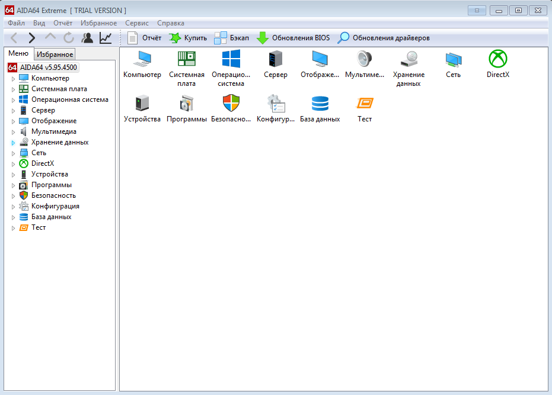
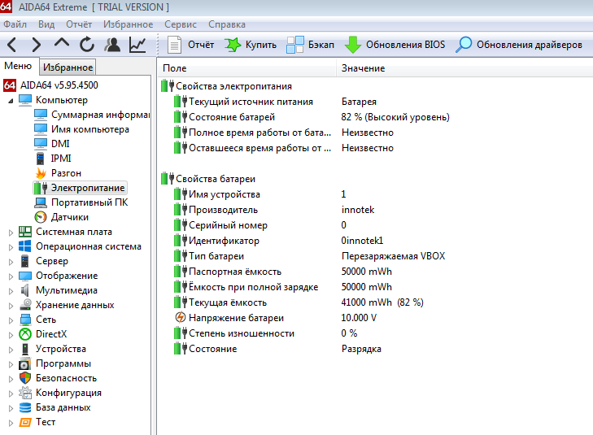
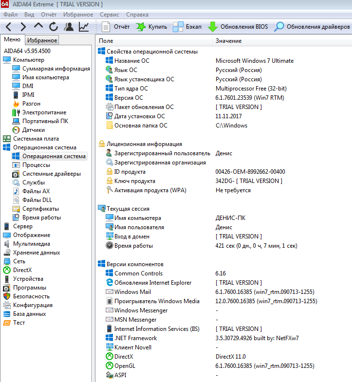
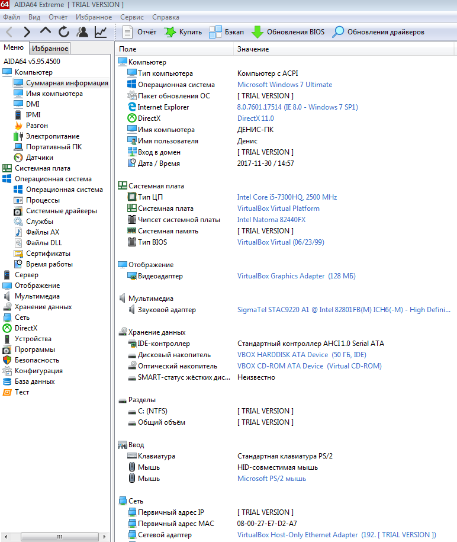
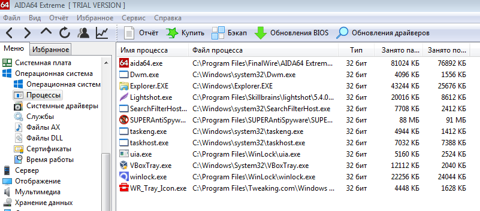
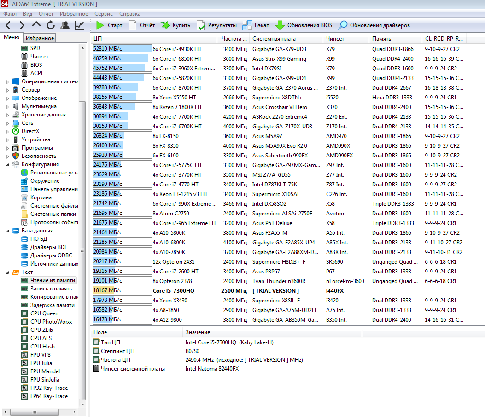
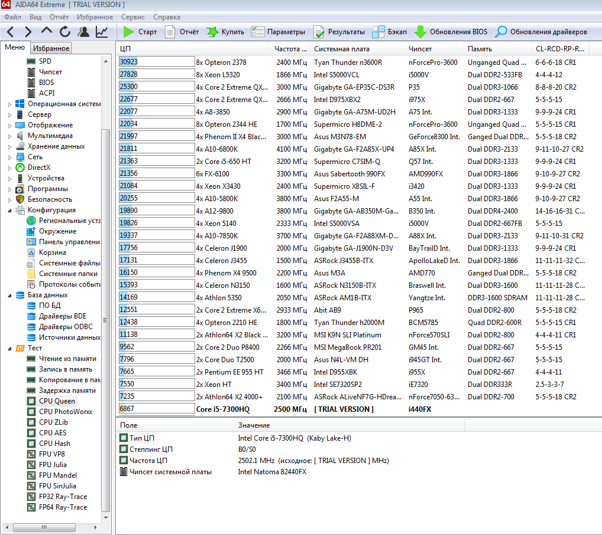

AIDA 64 — утилита для обзора и сбора статистики всех составляющих компьютера. С ее помощью можно узнать детальную информацию о внутренностях компьютера, будь это железо, программы, операционные системы, устройства и т.д. Данная программа имеет подробную информацию о компонентах системы, включает в себя целый набор тестеров, с помощью которых можно узнать о стабильности системы, производительности компьютера и прочее характеристики
Рис. 1. Главное окно программы
Главное окно программы представлено на рисунке 1.
Рис. 2. Подробная информация о батареи устройства
Информация о батерее устройства представлена на рисунке 2. В моем случае это ноутбук, таким образом можно узнать его основные свойства, степень изношенности и многое другое.


На рисунке №4 можно узнать суммарную информацию о компьютере.
Рис. 5. Список запущенных процессов
Рис. 6. Тест на чтение из памяти
Основной функцией программы является проведение тестирования системы. В моем случае рассматривается тест на чтение из памяти. В результате открывается окно с рейтингом всех процессоров, наш процессор выделен желтым цветом.
Помимо этого, AIDA 64 может проводить стресс-тест системы, в данном случае компьютер подвергается нагрузке и происходить запись датчиком температуры. Также можно провести тест чтения диска, теста работы памяти и так далее.
Рис. 7.Тест процессора CPU Queen
CPU Queen – тест производительности процессора в целочисленных операциях.
В общем программа оказалась довольно полезной для обычного пользователя, так как помогает определить устройства компьютера, провести диагностику “железа” системы и выявить неполадки в работе компьютера.